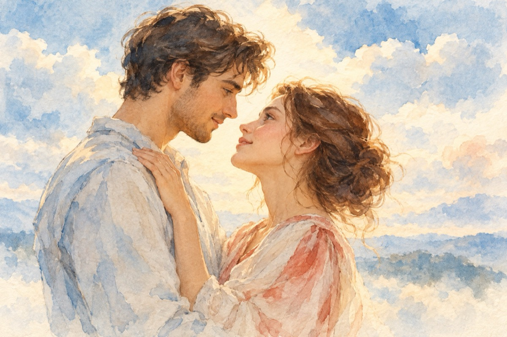

Iubirea nu-i un vis
Ceva mi-a spus că te iubesc
Ceva s-a întâmplat cu tine
Am vrut, am vrut să te-ntâlnesc
Dar te-am văzut fugind de mine
Am vrut atunci să-ți reproșez
Indiferența ta, pe față
Mărturisindu-ți al meu crez
Iar tu plecai cu altă față.
Iubesc ceva ce nu există
Doar într-un vis de-a mai spera
Iubirea mea e interzisă
Când tu iubești pe-altcineva.
Dar nu mă lasă inima!
Acuma stau și mă gândesc
Mereu la fericirea ta
Am voie-n gând să te iubesc
E dreptul meu, speranța mea!
Iubesc ceea ce nu există
Doar într-un vis de-a mai spera
Iubirea mea e interzisă
Când tu iubești pe-altcineva.
Ceva s-a întâmplat cu tine
În ochii tăi adânc privesc
E adevăr sau o minune
Tu mă iubești, eu te iubesc!
Iubesc ceva ce-acum există
Nu e un vis, este real
Iubesc, iubesc, sunt fericită,
Iubirea e supremul ideal!
Vasile Groza
Apare și în: D-ale lui Văsălie și Mărie.